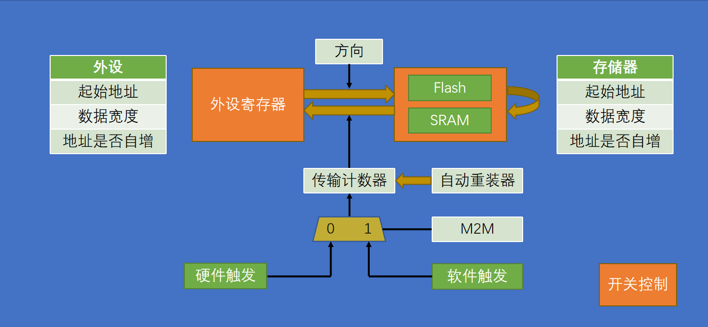
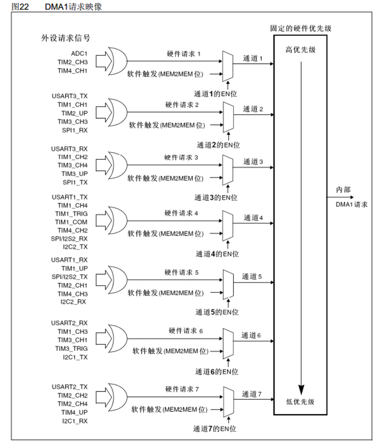

DMA
STM32中，DMA模块的学习笔记，包括DMA的概念、作用、运行原理、编程接口以及常用外设的DMA配置接口等内容。
DMA简介
概念
-
DMA（Direct Memory Access)：直接存储器存取，MCU的自带外设之一。
-
DMA提供外设和存储器，或存储器和存储器之间的告诉数据传输，无需CPU干预
-
有12个独立可配置的通道：DMA1（7个），DMA2（5个），STM32F103C8T6有DMA1的7个通道。
-
DMA每个通道都支持软件触发（一般是存储器之间）和特定的硬件触发（一般是外设到存储器）
作用
缺少DMA时的问题
-
CPU 负担大：大量数据搬运占据主循环时间，影响程序响应；
-
实时性差：高频采样、串口通信等可能因为 CPU 忙导致丢失数据；
-
中断开销大：用中断触发太多数据搬运，CPU频繁切换工作，效率低。
DMA的作用
-
主要作用：抛开CPU，让外设和内存之间直接进行传输，CPU 只需要负责启动传输以及处理结果。
-
适用场景
-
连续采样/连续输出
-
大批量串口、SPI、I2S 数据处理
-
需要高吞吐率、低 CPU 占用的场景
-
存储器映像
| 类型 | 起始地址 | 存储器 | 用途 |
|---|---|---|---|
| ROM | 0x0800 0000 | 程序存储器Flash | 存储C语言编译后的程序代码 |
| ROM | 0x1FFF F000 | 系统存储器 | 存储BootLoader，用于串口下载 |
| ROM | 0x1FFF F800 | 选项字节 | 存储一些独立于程序代码的配置参数 |
| RAM | 0x2000 0000 | 运行内存SRAM | 存储运行过程中的临时变量 |
| RAM | 0x4000 0000 | 外设寄存器 | 存储各个外设的配置参数 |
| RAM | 0xE000 0000 | 内核外设寄存器 | 存储内核各个外设的配置参数 |
-
ROM:只读存储器，掉电后数据不丢失，读数据快，写数据极慢（一般不会进行此操作）。
-
RAM:随机存取存储器，掉电后数据清零，读写都很快。
STM32手册里称呼的存储器，一般只包含Flash和SRAM，不含外设寄存器。
DMA运行原理

- 如图，通过设置方向参数，DMA数据转运可以从外设到寄存器，也可以到存储器到外设，也可以Flash到SRAM或SRAM到SRAM。
flash很难写入，因此不会转运到flash
-
外设与存储器均有三个参数：
-
起始地址：指定数据的来源和去向。
-
数据宽度：指定一次转运数据的宽度，可选字节Byte(8位)，半字HalfWord(16位)，字Word(32位）
源端宽度比目标宽度大时，会舍弃高位只写入低位数据；源端宽度比目标宽度小时，在高位上补0。
- 地址是否自增：一次转运完成后，是否要将地址移动到下一个位置。在外设转运到存储器时，外设一般不用自增，存储器一般需要自增。
外设站点和存储器站点只是一个命名习惯，实际使用时会根据写入的起始地址自动寻找相应数据。可以在外设站点写存储器地址，存储器站点写外设地址，通过设置方向参数实现与正常写相同逻辑。
-
-
传输计数器：自减计数器，指定转运数据的次数，每转运一次减一，减到零时结束。结束后如果地址存在自增，也会自动回到起始地址。
DMA 的数据宽度定义了单次传输的数据载荷大小，在整轮传输中保持不变。而传输计数器定义了一轮传输中包含多少个这样的单次传输
-
自动重装器：使能后使传输计数器归零后自动重装到设置的次数。
-
触发控制
-
M2M(Memory To Memory，存储器到存储器)：置位1时DMA调用软件触发，置位0时DMA调用硬件触发。
-
软件触发逻辑是尽快转运数据，会连续触发DMA以将计数器清零，因此不能和自动重装器同时使用，否则会死循环。
-
硬件触发逻辑是在收到硬件信号时触发DMA。不同硬件触发源有不同通道，需指定相应的通道才能正常使用。不同通道的DMA信号会进入仲裁器进行优先级判断（逻辑类似中断），最后产生DMA请求。

-
-
开关控制：使能DMA传输
-
注意事项：
-
向传输计数器写入值必须大于0
-
当传输计数器为零且没有自动重装时，要先关闭DMA再重写传输计数器的值，接着打开DMA。
-
编程接口
DMA自身配置
DMA通道初始化
void DMA_Init(uint32_t DMA_Channel, DMA_InitTypeDef* DMA_InitStruct)
-
功能：初始化指定 DMA 通道，配置传输方向、地址、数据宽度、传输模式等参数。
-
参数：
DMA_Channel指定 DMA 通道，取值范围为DMA1_Channel1~DMA1_Channel7或DMA2_Channel1~DMA2_Channel5。 -
DMA_InitStruct为一个结构体，成员包括：-
DMA_PeripheralBaseAddr：外设基地址，指定 DMA 传输的源或目的外设寄存器地址。 -
DMA_MemoryBaseAddr：存储器基地址，指定 DMA 传输的源或目的 SRAM 地址。 -
DMA_DIR：传输方向，取值为DMA_DIR_PeripheralSRC（外设到存储器）或DMA_DIR_PeripheralDST（存储器到外设）。 -
DMA_BufferSize：传输数据量，表示本轮传输的总次数。 -
DMA_PeripheralInc：外设地址是否自增，取值为DMA_PeripheralInc_Enable或DMA_PeripheralInc_Disable。 -
DMA_MemoryInc：存储器地址是否自增，取值为DMA_MemoryInc_Enable或DMA_MemoryInc_Disable。 -
DMA_PeripheralDataSize：外设数据宽度，可选DMA_PeripheralDataSize_Byte、DMA_PeripheralDataSize_HalfWord、DMA_PeripheralDataSize_Word。 -
DMA_MemoryDataSize：存储器数据宽度，可选DMA_MemoryDataSize_Byte、DMA_MemoryDataSize_HalfWord、DMA_MemoryDataSize_Word。 -
DMA_Mode：传输模式，取值为DMA_Mode_Normal（正常模式）或DMA_Mode_Circular（循环模式）。 -
DMA_Priority：通道优先级，取值为DMA_Priority_Low、DMA_Priority_Medium、DMA_Priority_High、DMA_Priority_VeryHigh。 -
DMA_M2M：是否为存储器到存储器模式，取值为DMA_M2M_Enable或DMA_M2M_Disable。
-
DMA启停控制
void DMA_Cmd(uint32_t DMA_Channel, FunctionalState NewState)
-
功能：启用或禁用指定 DMA 通道。
-
参数：
DMA_Channel指定通道号；NewState取值为ENABLE或DISABLE。 -
说明：在完成地址、数据宽度和传输计数器配置后，调用该函数启动 DMA 传输。
设置传输计数器
void DMA_SetCurrDataCounter(uint32_t DMA_Channel, uint16_t DataNumber)
-
功能：设置指定 DMA 通道当前的传输数据量。
-
参数：
DMA_Channel指定通道号；DataNumber表示本轮传输次数，通常必须大于 0。 -
说明：该函数常用于重新配置 DMA 时更新传输长度。若 DMA 处于非自动重装并且传输已结束，需要先关闭 DMA，再重写计数器。
uint16_t DMA_GetCurrDataCounter(uint32_t DMA_Channel)
-
功能：读取指定 DMA 通道当前剩余未传输的数据量。
-
参数：
DMA_Channel指定通道号。
DMA中断与状态管理
void DMA_ITConfig(uint32_t DMA_Channel, uint32_t DMA_IT, FunctionalState NewState)
-
功能：配置指定 DMA 通道的中断源。
-
参数：
DMA_Channel指定通道号；DMA_IT指定中断类型，常见值包括DMA_IT_TC（传输完成中断）、DMA_IT_HT（半传输中断）、DMA_IT_TE（传输错误中断）；NewState取值为ENABLE或DISABLE。 -
说明：该函数用于开启 DMA 的相关中断，通常与 NVIC 配置配合使用。
FlagStatus DMA_GetFlagStatus(uint32_t DMA_FLAG)
-
功能：检查指定 DMA 标志位是否置位。
-
参数：
DMA_FLAG指定要查询的标志位，例如DMA1_FLAG_TC1、DMA1_FLAG_HT1、DMA1_FLAG_TE1等。 -
返回值：
SET表示标志位已置位，RESET表示未置位。
void DMA_ClearFlag(uint32_t DMA_FLAG)
-
功能：清除指定 DMA 标志位。
-
参数：
DMA_FLAG指定要清除的标志位。 -
说明：在中断服务函数中，通常需要先清除 DMA 标志位，再继续下一轮传输。
ITStatus DMA_GetITStatus(uint32_t DMA_IT)
-
功能：检查指定 DMA 中断是否发生。
-
参数：
DMA_IT指定要查询的中断类型。 -
返回值：
SET表示中断已发生，RESET表示未发生。
void DMA_ClearITPendingBit(uint32_t DMA_IT)
-
功能：清除指定 DMA 中断挂起位。
-
参数：
DMA_IT指定要清除的中断类型。 -
说明：在处理 DMA 传输完成或传输错误中断后，需要清除挂起位，避免重复触发。
DMA配置流程总结
-
使能对应 DMA 时钟(AHB)与外设时钟。
-
配置
DMA_InitTypeDef结构体，设置外设地址、存储器地址、方向和数据宽度。 -
调用
DMA_Init初始化指定通道。 -
设置
DMA_BufferSize和传输计数器。 -
调用
DMA_ITConfig开启需要的中断（如传输完成中断）。 -
调用
DMA_Cmd启动 DMA 传输。 -
在中断服务函数中读取状态、清除标志位，并根据需要重新配置或处理数据。
常用外设的 DMA 配置接口
在实际开发中，DMA 很少单独使用，通常与外设配合完成数据搬运。下面总结几种最常见的 STM32 外设 DMA 配置接口，重点放在“谁发起 DMA 请求、何时开启、如何绑定通道”这几个关键点。
USART DMA
void USART_DMACmd(USART_TypeDef* USARTx, uint16_t USART_DMAReq, FunctionalState NewState)
-
功能：使能或禁用 USART 的 DMA 请求。
-
参数：
USARTx为串口实例，如USART1、USART2；USART_DMAReq表示 DMA 请求源，常见值包括USART_DMAReq_Tx（发送 DMA 请求）和USART_DMAReq_Rx（接收 DMA 请求）；NewState取值为ENABLE或DISABLE。 -
说明：该函数只是打开外设的 DMA 传输请求，真正的搬运通道还需要单独配置 DMA 通道和中断。
USART 的 DMA 常用于串口大批量接收/发送。
ADC DMA
void ADC_DMACmd(ADC_TypeDef* ADCx, FunctionalState NewState)
-
功能：启用 ADC 的 DMA 传输模式。
-
参数：
ADCx指定 ADC 实例，如ADC1、ADC2；NewState取值为ENABLE或DISABLE。 -
说明：ADC 采样完成后，将数据自动写入 RAM，通常用于连续采样场景。
SPI DMA
void SPI_I2S_DMACmd(SPI_TypeDef* SPIx, uint16_t SPI_I2S_DMAReq, FunctionalState NewState)
-
功能：使能或禁用 SPI 的 DMA 请求。
-
参数：
SPIx表示 SPI 实例，如SPI1、SPI2；SPI_I2S_DMAReq指定请求类型，常见值包括SPI_I2S_DMAReq_Tx（发送请求）和SPI_I2S_DMAReq_Rx（接收请求）；NewState取值为ENABLE或DISABLE。 -
说明：启用后，SPI 发送/接收时可以由 DMA 自动处理数据，不再需要 CPU 逐个字节搬运。
SPI DMA 经常用于 LCD 驱动、外部 Flash 读写、ADC/DAC 数据传输等高速数据接口。
I2C DMA
void I2C_DMACmd(I2C_TypeDef* I2Cx, FunctionalState NewState)
-
功能：使能或禁用 I2C 的 DMA 传输请求。
-
参数：
I2Cx指定 I2C 实例，如I2C1、I2C2；NewState取值为ENABLE或DISABLE。 -
说明：I2C 的 DMA 主要用于发送/接收大量数据，适合读取 EEPROM、传感器寄存器数据等场景。
void I2C_DMALastTransferCmd(I2C_TypeDef* I2Cx, FunctionalState NewState)
-
功能：设置 DMA 最后一个传输标志。
-
参数：
I2Cx为 I2C 实例；NewState取值为ENABLE或DISABLE。 -
说明：该函数通常用于帮助 I2C 控制器判断当前 DMA 传输是否为最后一个字节，便于结束通信。
I2C 传输数据量通常不如 SPI/USART 大，但在批量读取寄存器或传感器数据时，DMA 仍然能减少 CPU 的等待和重复处理。
外设DMA配置顺序
以 USART 接收 DMA 为例，通常流程为：
-
配置对应外设（如 USART 初始化）。
-
使能 DMA 时钟和外设时钟。
-
配置 DMA 通道：外设地址、内存地址、数据宽度、传输长度、循环模式。
-
调用
USART_DMACmd(..., USART_DMAReq_Rx, ENABLE)开启外设 DMA 请求。 -
调用
DMA_Cmd启动 DMA 传输。 -
在 DMA 传输完成中断中处理缓冲区数据。